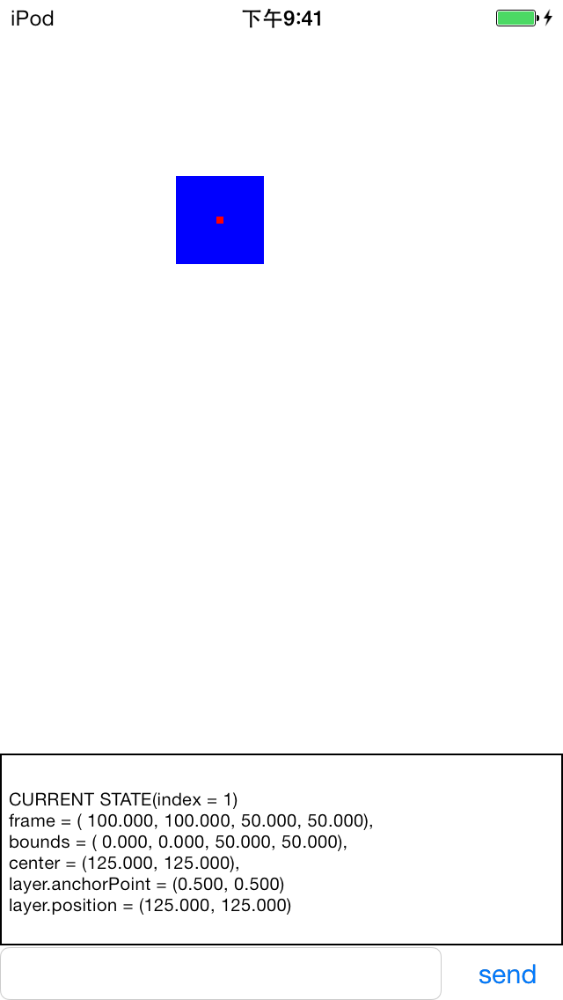
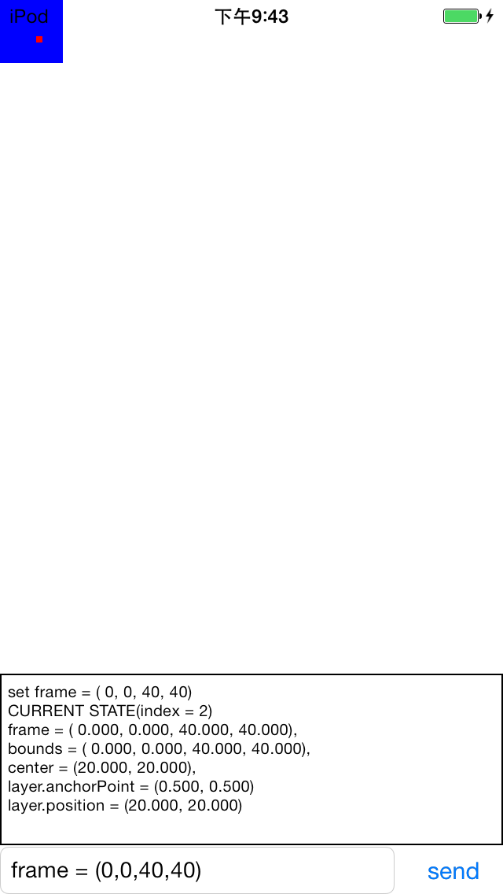
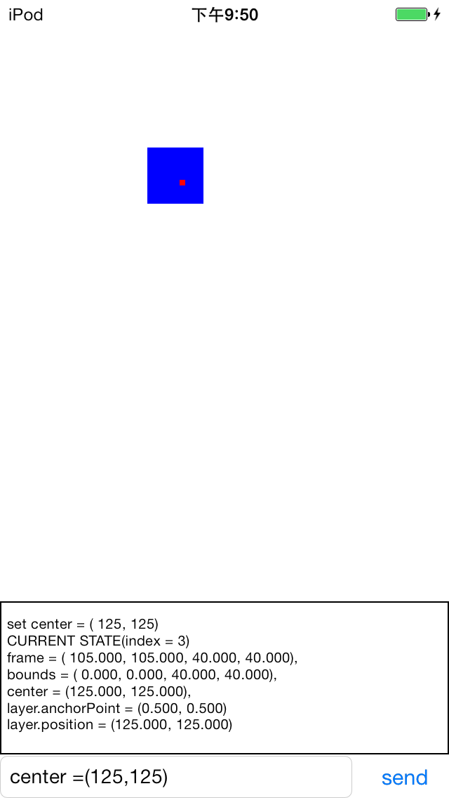
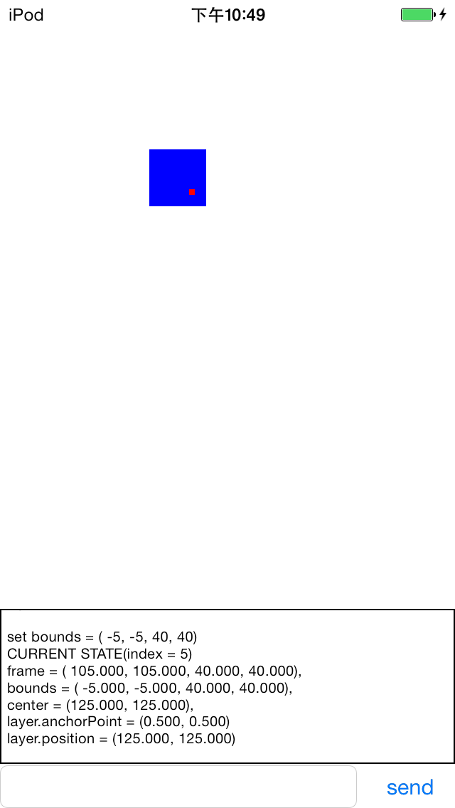
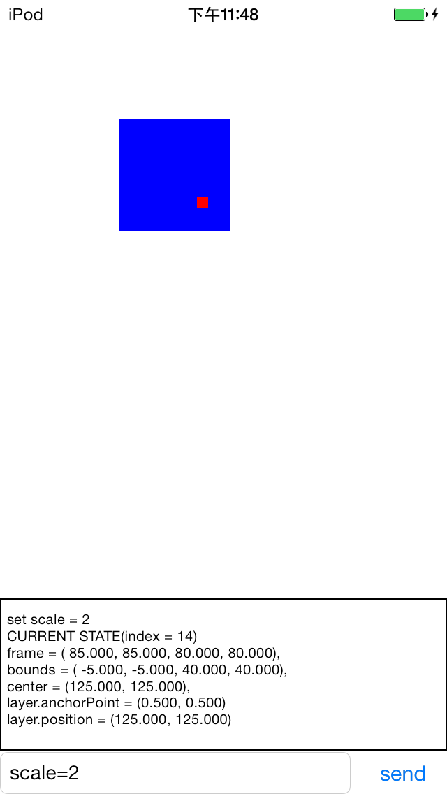
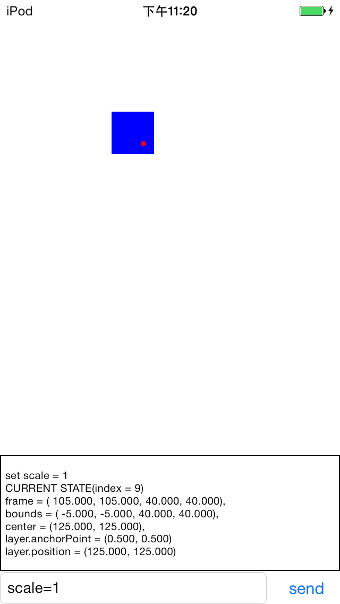
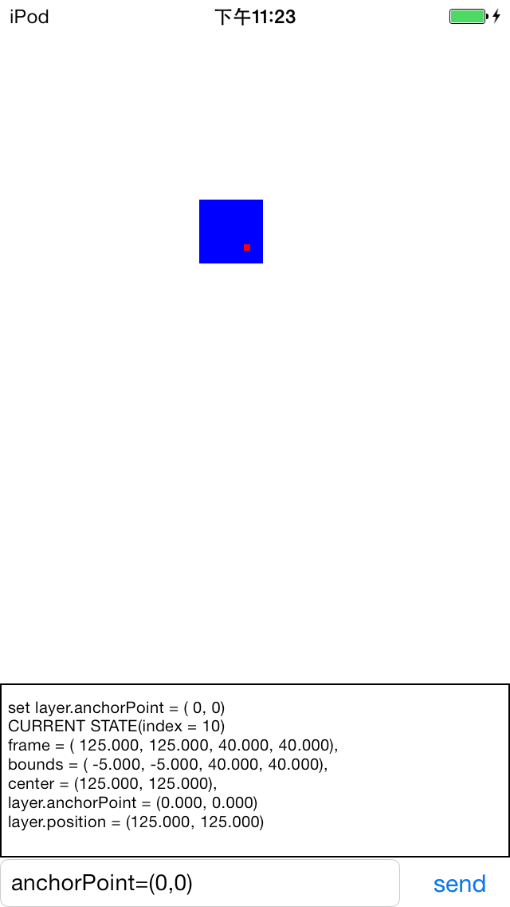
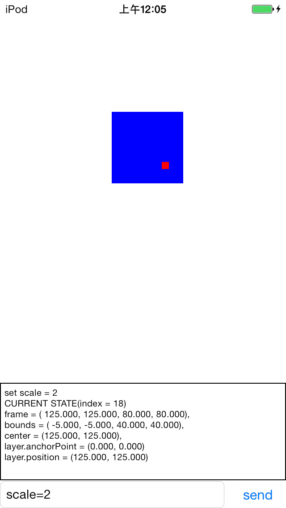

<!DOCTYPE html>
<html lang="zh-Hans">
<head>
  <meta charset="UTF-8">
<meta name="viewport" content="width=device-width, initial-scale=1, maximum-scale=2">
<meta name="theme-color" content="#222">
<meta name="generator" content="Hexo 4.2.0">
  <link rel="apple-touch-icon" sizes="180x180" href="/images/apple-touch-icon-next.png">
  <link rel="icon" type="image/png" sizes="32x32" href="/images/favicon-32x32-next.png">
  <link rel="icon" type="image/png" sizes="16x16" href="/images/favicon-16x16-next.png">
  <link rel="mask-icon" href="/images/logo.svg" color="#222">

<link rel="stylesheet" href="/css/main.css">


<link rel="stylesheet" href="/lib/font-awesome/css/font-awesome.min.css">


<script id="hexo-configurations">
  var NexT = window.NexT || {};
  var CONFIG = {
    hostname: new URL('http://blog.bookbook.in').hostname,
    root: '/',
    scheme: 'Pisces',
    version: '7.7.0',
    exturl: false,
    sidebar: {"position":"left","display":"post","padding":18,"offset":12,"onmobile":false},
    copycode: {"enable":false,"show_result":false,"style":null},
    back2top: {"enable":true,"sidebar":false,"scrollpercent":false},
    bookmark: {"enable":false,"color":"#222","save":"auto"},
    fancybox: false,
    mediumzoom: false,
    lazyload: false,
    pangu: false,
    comments: {"style":"tabs","active":null,"storage":true,"lazyload":false,"nav":null},
    algolia: {
      appID: '',
      apiKey: '',
      indexName: '',
      hits: {"per_page":10},
      labels: {"input_placeholder":"Search for Posts","hits_empty":"We didn't find any results for the search: ${query}","hits_stats":"${hits} results found in ${time} ms"}
    },
    localsearch: {"enable":false,"trigger":"auto","top_n_per_article":1,"unescape":false,"preload":false},
    path: '',
    motion: {"enable":true,"async":false,"transition":{"post_block":"fadeIn","post_header":"slideDownIn","post_body":"slideDownIn","coll_header":"slideLeftIn","sidebar":"slideUpIn"}}
  };
</script>

  <meta name="description" content="摘要：如果你刚刚开始接触IOS编程, 刚刚接触UIKit, 肯定会被 frame, bounds, center, layer.anchorPoint, layer.position 这些乱七八糟得属性折腾得心烦意乱. 并且,聪明的你肯定早就发现,这些属性并不是独立的, 比如frame和bounds, 你改变一个必然会影响另一个, 这就更加大了理解难度. 我想通过这篇浅显的日志,和一个简单的Dem">
<meta property="og:type" content="article">
<meta property="og:title" content="[iOS]UIView.frame的骗局">
<meta property="og:url" content="http://blog.bookbook.in/2013/11/03/%E6%8A%80%E6%9C%AF/[iOS]UIView%E4%BD%8D%E7%BD%AE%E5%B1%9E%E6%80%A7%E5%A4%A7%E6%8F%AD%E7%A7%98/index.html">
<meta property="og:site_name" content="Book Book, Come in~">
<meta property="og:description" content="摘要：如果你刚刚开始接触IOS编程, 刚刚接触UIKit, 肯定会被 frame, bounds, center, layer.anchorPoint, layer.position 这些乱七八糟得属性折腾得心烦意乱. 并且,聪明的你肯定早就发现,这些属性并不是独立的, 比如frame和bounds, 你改变一个必然会影响另一个, 这就更加大了理解难度. 我想通过这篇浅显的日志,和一个简单的Dem">
<meta property="og:image" content="http://blog.bookbook.in/2013/11/03/%E6%8A%80%E6%9C%AF/[iOS]UIView%E4%BD%8D%E7%BD%AE%E5%B1%9E%E6%80%A7%E5%A4%A7%E6%8F%AD%E7%A7%98/frame_images/IMG_0012.PNG">
<meta property="og:image" content="http://blog.bookbook.in/2013/11/03/%E6%8A%80%E6%9C%AF/[iOS]UIView%E4%BD%8D%E7%BD%AE%E5%B1%9E%E6%80%A7%E5%A4%A7%E6%8F%AD%E7%A7%98/frame_images/IMG_0013.PNG">
<meta property="og:image" content="http://blog.bookbook.in/2013/11/03/%E6%8A%80%E6%9C%AF/[iOS]UIView%E4%BD%8D%E7%BD%AE%E5%B1%9E%E6%80%A7%E5%A4%A7%E6%8F%AD%E7%A7%98/frame_images/IMG_0014.PNG">
<meta property="og:image" content="http://blog.bookbook.in/2013/11/03/%E6%8A%80%E6%9C%AF/[iOS]UIView%E4%BD%8D%E7%BD%AE%E5%B1%9E%E6%80%A7%E5%A4%A7%E6%8F%AD%E7%A7%98/frame_images/IMG_0015.PNG">
<meta property="og:image" content="http://blog.bookbook.in/2013/11/03/%E6%8A%80%E6%9C%AF/[iOS]UIView%E4%BD%8D%E7%BD%AE%E5%B1%9E%E6%80%A7%E5%A4%A7%E6%8F%AD%E7%A7%98/frame_images/IMG_0016.PNG">
<meta property="og:image" content="http://blog.bookbook.in/2013/11/03/%E6%8A%80%E6%9C%AF/[iOS]UIView%E4%BD%8D%E7%BD%AE%E5%B1%9E%E6%80%A7%E5%A4%A7%E6%8F%AD%E7%A7%98/frame_images/IMG_0020.PNG">
<meta property="og:image" content="http://blog.bookbook.in/2013/11/03/%E6%8A%80%E6%9C%AF/[iOS]UIView%E4%BD%8D%E7%BD%AE%E5%B1%9E%E6%80%A7%E5%A4%A7%E6%8F%AD%E7%A7%98/frame_images/IMG_0017.PNG">
<meta property="og:image" content="http://blog.bookbook.in/2013/11/03/%E6%8A%80%E6%9C%AF/[iOS]UIView%E4%BD%8D%E7%BD%AE%E5%B1%9E%E6%80%A7%E5%A4%A7%E6%8F%AD%E7%A7%98/frame_images/IMG_0019.PNG">
<meta property="og:image" content="http://blog.bookbook.in/2013/11/03/%E6%8A%80%E6%9C%AF/[iOS]UIView%E4%BD%8D%E7%BD%AE%E5%B1%9E%E6%80%A7%E5%A4%A7%E6%8F%AD%E7%A7%98/frame_images/IMG_0022.PNG">
<meta property="article:published_time" content="2013-11-02T16:25:00.000Z">
<meta property="article:modified_time" content="2019-01-13T05:00:17.000Z">
<meta property="article:author" content="知明所以">
<meta property="article:tag" content="anchorPoint">
<meta property="article:tag" content="ios">
<meta property="article:tag" content="transform">
<meta property="article:tag" content="frame">
<meta property="article:tag" content="center">
<meta property="article:tag" content="bounds">
<meta property="article:tag" content="position">
<meta property="article:tag" content="UIView">
<meta name="twitter:card" content="summary">
<meta name="twitter:image" content="http://blog.bookbook.in/2013/11/03/%E6%8A%80%E6%9C%AF/[iOS]UIView%E4%BD%8D%E7%BD%AE%E5%B1%9E%E6%80%A7%E5%A4%A7%E6%8F%AD%E7%A7%98/frame_images/IMG_0012.PNG">

<link rel="canonical" href="http://blog.bookbook.in/2013/11/03/%E6%8A%80%E6%9C%AF/[iOS]UIView%E4%BD%8D%E7%BD%AE%E5%B1%9E%E6%80%A7%E5%A4%A7%E6%8F%AD%E7%A7%98/">


<script id="page-configurations">
  // https://hexo.io/docs/variables.html
  CONFIG.page = {
    sidebar: "",
    isHome: false,
    isPost: true
  };
</script>

  <title>[iOS]UIView.frame的骗局 | Book Book, Come in~</title>
  


  <noscript>
  <style>
  .use-motion .brand,
  .use-motion .menu-item,
  .sidebar-inner,
  .use-motion .post-block,
  .use-motion .pagination,
  .use-motion .comments,
  .use-motion .post-header,
  .use-motion .post-body,
  .use-motion .collection-header { opacity: initial; }

  .use-motion .site-title,
  .use-motion .site-subtitle {
    opacity: initial;
    top: initial;
  }

  .use-motion .logo-line-before i { left: initial; }
  .use-motion .logo-line-after i { right: initial; }
  </style>
</noscript>

</head>

<body itemscope itemtype="http://schema.org/WebPage">
  <div class="container use-motion">
    <div class="headband"></div>

    <header class="header" itemscope itemtype="http://schema.org/WPHeader">
      <div class="header-inner"><div class="site-brand-container">
  <div class="site-meta">

    <div>
      <a href="/" class="brand" rel="start">
        <span class="logo-line-before"><i></i></span>
        <span class="site-title">Book Book, Come in~</span>
        <span class="logo-line-after"><i></i></span>
      </a>
    </div>
        <p class="site-subtitle">知明所以的博客</p>
  </div>

  <div class="site-nav-toggle">
    <div class="toggle" aria-label="Toggle navigation bar">
      <span class="toggle-line toggle-line-first"></span>
      <span class="toggle-line toggle-line-middle"></span>
      <span class="toggle-line toggle-line-last"></span>
    </div>
  </div>
</div>


<nav class="site-nav">
  
  <ul id="menu" class="menu">
        <li class="menu-item menu-item-home">

    <a href="/" rel="section"><i class="fa fa-fw fa-home"></i>Home</a>

  </li>
        <li class="menu-item menu-item-about">

    <a href="/about/" rel="section"><i class="fa fa-fw fa-user"></i>About</a>

  </li>
        <li class="menu-item menu-item-tags">

    <a href="/tags/" rel="section"><i class="fa fa-fw fa-tags"></i>Tags</a>

  </li>
        <li class="menu-item menu-item-categories">

    <a href="/categories/" rel="section"><i class="fa fa-fw fa-th"></i>Categories</a>

  </li>
        <li class="menu-item menu-item-archives">

    <a href="/archives/" rel="section"><i class="fa fa-fw fa-archive"></i>Archives</a>

  </li>
  </ul>

</nav>
</div>
    </header>

    
  <div class="back-to-top">
    <i class="fa fa-arrow-up"></i>
    <span>0%</span>
  </div>


    <main class="main">
      <div class="main-inner">
        <div class="content-wrap">
          

          <div class="content">
            

  <div class="posts-expand">
      
  
  
  <article itemscope itemtype="http://schema.org/Article" class="post-block " lang="zh-Hans">
    <link itemprop="mainEntityOfPage" href="http://blog.bookbook.in/2013/11/03/%E6%8A%80%E6%9C%AF/[iOS]UIView%E4%BD%8D%E7%BD%AE%E5%B1%9E%E6%80%A7%E5%A4%A7%E6%8F%AD%E7%A7%98/">

    <span hidden itemprop="author" itemscope itemtype="http://schema.org/Person">
      <meta itemprop="image" content="/images/avatar.gif">
      <meta itemprop="name" content="知明所以">
      <meta itemprop="description" content="关系、健康、自由，是我的追求。">
    </span>

    <span hidden itemprop="publisher" itemscope itemtype="http://schema.org/Organization">
      <meta itemprop="name" content="Book Book, Come in~">
    </span>
      <header class="post-header">
        <h1 class="post-title" itemprop="name headline">
          [iOS]UIView.frame的骗局
        </h1>

        <div class="post-meta">
            <span class="post-meta-item">
              <span class="post-meta-item-icon">
                <i class="fa fa-calendar-o"></i>
              </span>
              <span class="post-meta-item-text">Posted on</span>

              <time title="Created: 2013-11-03 00:25:00" itemprop="dateCreated datePublished" datetime="2013-11-03T00:25:00+08:00">2013-11-03</time>
            </span>
              <span class="post-meta-item">
                <span class="post-meta-item-icon">
                  <i class="fa fa-calendar-check-o"></i>
                </span>
                <span class="post-meta-item-text">Edited on</span>
                <time title="Modified: 2019-01-13 13:00:17" itemprop="dateModified" datetime="2019-01-13T13:00:17+08:00">2019-01-13</time>
              </span>
            <span class="post-meta-item">
              <span class="post-meta-item-icon">
                <i class="fa fa-folder-o"></i>
              </span>
              <span class="post-meta-item-text">In</span>
                <span itemprop="about" itemscope itemtype="http://schema.org/Thing">
                  <a href="/categories/%E6%8A%80%E6%9C%AF/" itemprop="url" rel="index">
                    <span itemprop="name">技术</span>
                  </a>
                </span>
            </span>

          

        </div>
      </header>

    
    
    
    <div class="post-body" itemprop="articleBody">

      
        <p>摘要：如果你刚刚开始接触IOS编程, 刚刚接触UIKit, 肯定会被 <code>frame, bounds, center, layer.anchorPoint, layer.position</code> 这些乱七八糟得属性折腾得心烦意乱. 并且,聪明的你肯定早就发现,这些属性并不是独立的, 比如<code>frame</code>和<code>bounds</code>, 你改变一个必然会影响另一个, 这就更加大了理解难度. 我想通过这篇<strong>浅显的日志,和一个简单的Demo</strong>来表达出我对这些变量的理解. 难免有偏差之处, 欢迎拍砖. 但是我能保证的是这些理解方式是<strong>实用</strong>的. 我个人也是看过网上很多日志对其有些微理解, 然后又通过写一个Demo来证明自己的想法. </p>
<hr>
<p>其实, 受过10几年教育的你, 必然知道, 一个二维矩形, 只要有了<code>{x,y,width,height}</code>, 也就唯一确定了它的几何属性. 没错, 其实<code>UIView</code>里面也就这几个变量. 其他变量, 比如<code>frame,bounds</code>都是这些变量通过基本变量导出的.那么<code>UIView</code>拥有的真正意义上的属性有哪些呢?</p>
<h2 id="UIView-真正意义上的属性"><a href="#UIView-真正意义上的属性" class="headerlink" title="UIView 真正意义上的属性:"></a>UIView 真正意义上的属性:</h2><ul>
<li><strong>bounds</strong>:<br><code>bounds</code>是一个<code>CGRect</code>. 他的size部分决定了<code>UIView</code>的大小,也就是,<code>bounds.width</code>和<code>bounds.height</code>决定了<code>UIView</code>的大小.你也可以说<code>bounds.width</code>和<code>bounds.height</code>就是<code>UIView</code>的<code>width</code>和<code>height</code>. <code>bounds.x</code>和<code>bounds.y</code>决定了<code>UIView</code>的<code>subView</code>的原点坐标.如果你更改了<code>bounds.x</code>或者<code>bounds.y</code>,<code>UIView</code>的位置和大小完全不为所动, 但是<code>UIView</code>的所有<code>subView</code>都会平移一段距离<code>(-bounds.x,-bounds.y)</code>(这一点我们会在下文做详细陈述).</li>
<li><strong>center</strong>:<br>望文生义(注意,这是个带贬义的词),他就是<code>UIView</code>的中心,也就是坐标点<code>(view.width/2,view.height/2)</code>.但是,可恶的但是, 上句话仅仅在在一个<code>UIView</code>刚被创建的时候成立. 也就是,在刚刚创建<code>UIView</code>的时候,他<strong>恰好</strong>成立. <strong>其实, <code>center</code>有它更重要的角色: 就是决定了<code>UIView</code>的位置.</strong> (但是,这个位置并不是我们常规意义上理解的<code>(x,y)</code>. 在这里你先知道它来决定我们UIView的位置就好了.)</li>
</ul>
<p>下面来看我们的第一个公式.</p>
<h2 id="揭开frame的本质"><a href="#揭开frame的本质" class="headerlink" title="揭开frame的本质"></a>揭开frame的本质</h2><p>我想,对于程序员的你,没有比比代码更直接的方式了吧?<br>下面就是<code>UIView</code>的属性<code>frame</code>的实现:</p>
<figure class="highlight plain"><table><tr><td class="gutter"><pre><span class="line">1</span><br><span class="line">2</span><br><span class="line">3</span><br><span class="line">4</span><br><span class="line">5</span><br><span class="line">6</span><br><span class="line">7</span><br><span class="line">8</span><br><span class="line">9</span><br><span class="line">10</span><br><span class="line">11</span><br><span class="line">12</span><br><span class="line">13</span><br><span class="line">14</span><br><span class="line">15</span><br><span class="line">16</span><br><span class="line">17</span><br></pre></td><td class="code"><pre><span class="line">&#x2F;&#x2F;代码1</span><br><span class="line">-(CGRect) frame  </span><br><span class="line">&#123;  </span><br><span class="line">     float x &#x3D; center.x - 1&#x2F;2 * bounds.width;   </span><br><span class="line">     float y &#x3D; center.y - 1&#x2F;2 * bounds.height;  </span><br><span class="line">     float width &#x3D; bounds.width;</span><br><span class="line">     float height &#x3D; bounds.height;  </span><br><span class="line">     return CGRectMake(x, y, width, height);</span><br><span class="line">&#125;</span><br><span class="line"></span><br><span class="line">-(void) setFrame:(CGRect) rect</span><br><span class="line">&#123;</span><br><span class="line">	center.x &#x3D; rect.x + 1&#x2F;2 * rect.width;</span><br><span class="line">	center.y &#x3D; rect.y + 1&#x2F;2 * rect.height;</span><br><span class="line">	bounds.width &#x3D; rect.width;</span><br><span class="line">	bounds.height &#x3D; rect.height;</span><br><span class="line">&#125;</span><br></pre></td></tr></table></figure>

<p>下面来到实战演习:  </p>
<figure class="highlight plain"><table><tr><td class="gutter"><pre><span class="line">1</span><br><span class="line">2</span><br><span class="line">3</span><br><span class="line">4</span><br><span class="line">5</span><br><span class="line">6</span><br><span class="line">7</span><br><span class="line">8</span><br><span class="line">9</span><br><span class="line">10</span><br><span class="line">11</span><br><span class="line">12</span><br></pre></td><td class="code"><pre><span class="line">&#x2F;&#x2F;代码2</span><br><span class="line">- (void)viewDidLoad</span><br><span class="line">&#123;</span><br><span class="line">    [super viewDidLoad];</span><br><span class="line">	testView &#x3D; [[UIView alloc] initWithFrame:CGRectMake(100, 100, 50, 50)];</span><br><span class="line">	testView.backgroundColor &#x3D; [UIColor blueColor];</span><br><span class="line">	[self.view insertSubview:testView atIndex:0];</span><br><span class="line">	</span><br><span class="line">	UIView* innerView &#x3D; [[UIView alloc] initWithFrame:CGRectMake(23,23, 4, 4)];</span><br><span class="line">	innerView.backgroundColor &#x3D; [UIColor redColor];</span><br><span class="line">	[testView addSubview:innerView];</span><br><span class="line">&#125;</span><br></pre></td></tr></table></figure>
<p>初始状态,我们新建一个<code>UIView</code>,设置<code>frame</code>为<code>(100,100,50,50)</code>:<br>图1<br>  </p>
<p>然后,我们改变<code>frame</code>  </p>
<figure class="highlight plain"><table><tr><td class="gutter"><pre><span class="line">1</span><br></pre></td><td class="code"><pre><span class="line">testView.frame &#x3D; CGRectMake(0,0,40,40); &#x2F;&#x2F;代码3</span><br></pre></td></tr></table></figure>
<p>我们再看看各个属性的变化:<br>图2<br>  </p>
<p>没错,你看到了我们刚刚提到的<code>center</code>属性. 我们刚刚说过, 这个属性主要决定了<code>UIView</code>的位置. 所以当我们在<code>setFrame:</code>的时候会改变<code>UIView</code>的位置.<br>好吧, 既然我们见过<code>center</code>先生, 那就给您介绍一下吧, 也要给点面子是不?</p>
<h2 id="center如何搞定了位置"><a href="#center如何搞定了位置" class="headerlink" title="center如何搞定了位置?"></a>center如何搞定了位置?</h2><p><code>center</code>是<code>UIView</code>的相关属性中主要决定<code>UIView</code>位置(跟大小相对), 我们在图2的基础上, 改变center:  </p>
<figure class="highlight plain"><table><tr><td class="gutter"><pre><span class="line">1</span><br></pre></td><td class="code"><pre><span class="line">testView.center &#x3D; CGPointMake(125,125);&#x2F;&#x2F;代码4</span><br></pre></td></tr></table></figure>
<p>我们来看一下效果:<br>图3<br><br>看到了吧? <code>testView</code>的位置向左下移动了<code>(125-20, 125-20)</code>距离.<br>根据<em>代码1</em>, 我们可以看到, <code>center</code>和<code>bounds</code>属性是相互独立的. 也就是他们中间某一个发生了变化, 不会影响另一个. 这说明了什么? 说明我们改变<code>center</code>的时候, 仅仅会改变<code>testView</code>的位置, 而它的大小不会有任何改变.</p>
<p>好了, 到这里, <code>testView</code>的<strong>位置</strong>和<strong>大小</strong>问题,我们已经彻底解决了.<br>但是对于<code>bounds</code>小伙儿, 我们只关注了它的<code>size</code>部分, 忽略了他的<code>origin</code>部分. 不好意思, <code>bounds</code>小伙, 现在才想起你.</p>
<h2 id="bounds的另一半"><a href="#bounds的另一半" class="headerlink" title="bounds的另一半"></a>bounds的另一半</h2><p>没图没真相, 我们首先来点料吧:<br>图4,图5<br> </p>
<p><code>bounds.origin</code>初始情况下为<code>(0,0)</code>. 我们设置  </p>
<figure class="highlight plain"><table><tr><td class="gutter"><pre><span class="line">1</span><br></pre></td><td class="code"><pre><span class="line">testView.bounds &#x3D; CGRectMak(25,25,40,40); &#x2F;&#x2F;代码5</span><br></pre></td></tr></table></figure>
<p>得到左图.<br>我们没有改变<code>bounds.size</code>(仍然是40,40), 只是修改了<code>bounds.origin</code>: 从<code>(0,0)</code>改变成<code>(25,25)</code>.我们发现<code>testView</code>内部的小红点移动了<code>(0-25,0-25)</code>距离.(至于为设么这里是-25而不是25, 我也还没理解, 望高人指点.) 反正, 知道当你改变<code>bounds.origin</code>的时候, <code>testView</code>内部所有的<code>subView</code>都要想做相反方向的位移就对了. </p>
<p>在左图的基础上,再设置</p>
<figure class="highlight plain"><table><tr><td class="gutter"><pre><span class="line">1</span><br></pre></td><td class="code"><pre><span class="line">testView.bounds &#x3D; CGRectMak(-5,-5,40,40); &#x2F;&#x2F;代码6</span><br></pre></td></tr></table></figure>
<p>我们得到右图.</p>
<p>需要注意的是, 这里所有<code>subView</code>的<code>frame</code>是不会跟着改的, 还是原来的值. 我们可以这么理解: 设置<code>testView.origin</code>, 会改变所有孩子节点位置的基准点. 就比如, 我们把一辆车平移了, 我们站在路边发现车里的方向盘和发动机等子组件的位置都改变了, 而方向盘发动机等”子组件”相对于<strong>汽车的坐标</strong>没有改变.  </p>
<p>关于<code>bounds</code>, 还有一点要说: <strong>当你的<code>subView</code>的某些部分落在了<code>bounds</code>定义的矩形之外, 那么这些落在矩形之外的部分, 便不能接受任何点击,踩踏,横扫等事件了….</strong></p>
<figure class="highlight plain"><table><tr><td class="gutter"><pre><span class="line">1</span><br><span class="line">2</span><br><span class="line">3</span><br></pre></td><td class="code"><pre><span class="line"># ifdefine 欺骗 明明知道某个事实,却故意隐瞒或窜改并加以传播  </span><br><span class="line">写到这里, 我其实要跟大家道一个歉, 因为我在上面对frame的定义欺骗了大家.   </span><br><span class="line"># endif</span><br></pre></td></tr></table></figure>
<p><code>frame</code>的定义并没有这么简单, 因为还搀插着第三者的关系: <code>testView.layer.anchorPoint</code>.<br>有请 anchorPoint 出场!  </p>
<h2 id="在墙上钉个钉子-就是anchorPoint"><a href="#在墙上钉个钉子-就是anchorPoint" class="headerlink" title="在墙上钉个钉子,就是anchorPoint"></a>在墙上钉个钉子,就是anchorPoint</h2><p>好了,我们重新定义<code>frame</code>的<code>getter/setter</code>函数(其实就是把代码1的定义中所有的<code>1/2</code>改为<code>view.layer.anchorPoint</code>):</p>
<figure class="highlight plain"><table><tr><td class="gutter"><pre><span class="line">1</span><br><span class="line">2</span><br><span class="line">3</span><br><span class="line">4</span><br><span class="line">5</span><br><span class="line">6</span><br><span class="line">7</span><br><span class="line">8</span><br><span class="line">9</span><br><span class="line">10</span><br><span class="line">11</span><br><span class="line">12</span><br><span class="line">13</span><br><span class="line">14</span><br><span class="line">15</span><br><span class="line">16</span><br><span class="line">17</span><br></pre></td><td class="code"><pre><span class="line">&#x2F;&#x2F;代码7</span><br><span class="line">-(CGRect) frame  </span><br><span class="line">&#123;  </span><br><span class="line">     float x &#x3D; center.x - layer.anchorPoint.x * bounds.width;   </span><br><span class="line">     float y &#x3D; center.y - layer.anchorPoint.y * bounds.height;  </span><br><span class="line">     float width &#x3D; bounds.width;</span><br><span class="line">     float height &#x3D; bounds.height;  </span><br><span class="line">     return CGRectMake(x, y, width, height);</span><br><span class="line">&#125;</span><br><span class="line"></span><br><span class="line">-(void) setFrame:(CGRect) rect</span><br><span class="line">&#123;</span><br><span class="line">	center.x &#x3D; rect.x + layer.anchorPoint.x * rect.width;</span><br><span class="line">	center.y &#x3D; rect.y + layer.anchorPoint.y * rect.height;</span><br><span class="line">	bounds.width &#x3D; rect.width;</span><br><span class="line">	bounds.height &#x3D; rect.height;</span><br><span class="line">&#125;</span><br></pre></td></tr></table></figure>

<p>因为<code>anchorPoint</code>的默认值是<code>(0.5,0.5)</code>,所以如果你不改变<code>anchorPoint</code>,那么<em>代码1</em>就是正确的. 之所以在<em>代码1</em>里撒了一个谎, 是因为不想那么早把<code>anchorPoint</code>引出来.<br>现在,你既然知道了<code>anchorPoint</code>跟<code>frame</code>之间的关系, 必然想知道它到底有什么用:  </p>
<p>先给你一个直观印象: <code>anchorPoint</code>就是一个钉子,把一幅画钉在墙上. 以后你想做什么转动也好, 把相框拉伸也好, 这个点是绝对不会动的.<br><code>anchorPoint</code>的默认值是<code>(0.5,0.5)</code>. 也就是说默认情况下,你对<code>testView</code>作旋转和缩放, 都会以<code>(bounds.size.width/2,bounds.size.height/2)</code>为基准点.下面我们接着图5来看一个转化:</p>
<figure class="highlight plain"><table><tr><td class="gutter"><pre><span class="line">1</span><br></pre></td><td class="code"><pre><span class="line">testView.transform &#x3D; CGAffineTransformMakeScale(2, 2);&#x2F;&#x2F;代码8</span><br></pre></td></tr></table></figure>
<p>视图如下:<br>图6<br><br>我们看到,<code>testView</code>以中心点位固定点,等比例扩大了一倍.<code>frame.origin</code>也移动了<code>(-20,-20)</code>. 跟我们的预期一样.<br><del>这里需要特别提醒各位的是:** 当对<code>testView</code>进行了<code>transform</code>之后,我们再去设置<code>frame</code>, <code>frame</code>已经完全不理咱们了. 也就是说<code>setFrame</code>函数完全不工作了.** 我们这个时候调用<code>frame</code>的<code>getter</code>函数, 得到的是transform后的大小.如上图所示,变成了<code>(85,85,80,80)</code>.</del><br>如果, 我们把<code>scale</code>恢复为1, 再改变<code>anchorPoint</code>的位置为<code>(0,0)</code>, 然后再把<code>testView</code>放大一倍(<code>scale=2</code>). 看看会发现什么:  </p>
<figure class="highlight plain"><table><tr><td class="gutter"><pre><span class="line">1</span><br><span class="line">2</span><br><span class="line">3</span><br><span class="line">4</span><br></pre></td><td class="code"><pre><span class="line">&#x2F;&#x2F;代码9</span><br><span class="line">testView.transform &#x3D; CGAffineTransformMakeScale(1, 1);</span><br><span class="line">testView.layer.anchorPoint &#x3D; CGPointMake(0,0)</span><br><span class="line">testView.transform &#x3D; CGAffineTransformMakeScale(2, 2);</span><br></pre></td></tr></table></figure>
<p>下面三个图分别对应上面三行代码执行后的状态:<br>图7,图8,图9<br> </p>
<p>对于上面的运行结果, 我有几点说明:   </p>
<ul>
<li>当我们改变<code>anchorPoint</code>的时候,<code>center</code>没有改变,那么根据<em>代码7</em>, <code>frame</code>也会随着发生改变. 您可以在图8中观察到这一变化.  </li>
<li>观察图8和图9的变化,你可以发现,这次缩放的中心点在左上角. 因为我们设置了<code>anchorPoint = CGPointMake(0,0)</code>.  </li>
<li>如果您是对图像做旋转, <code>anchorPoint</code>也是旋转的中心.</li>
</ul>
<p>到此为止, 文章开始提到的属性都基本讲完了. 只剩下了<code>layer.position</code>. 如果你细心, 你会发现上面所有的图片中, <code>layer.position === center</code>, 没错, 任何时候他们都是相等的.</p>
<h2 id="结尾"><a href="#结尾" class="headerlink" title="结尾"></a>结尾</h2><p>这里有博客中Demo的代码下载, 本博客中的所有截图都来自于Demo的截屏.如果我在博客中没有说明白, 您可以下载Demo仔细把玩. 相信你可以在实际操作中有更深刻的理解<br>Demo底部的输入框支持的的语法有:</p>
<figure class="highlight plain"><table><tr><td class="gutter"><pre><span class="line">1</span><br><span class="line">2</span><br><span class="line">3</span><br><span class="line">4</span><br><span class="line">5</span><br><span class="line">6</span><br><span class="line">7</span><br></pre></td><td class="code"><pre><span class="line">scale &#x3D; number</span><br><span class="line">center &#x3D; ( number, number )</span><br><span class="line">frame &#x3D; (number, number, number, number )</span><br><span class="line">bounds &#x3D; (number, number, number, number)</span><br><span class="line">center &#x3D; (number, number)</span><br><span class="line">position &#x3D; (number, number) &#x2F;&#x2F;layer.position</span><br><span class="line">anchorPoint &#x3D; (number, number) &#x2F;&#x2F;layer.anchorPoint</span><br></pre></td></tr></table></figure>
<p>比如您输入<code>frame =(0,0,40,40)</code>,就相当于执行代码<code>testView.frame = CGRectMake(0,0,40,40)</code>. 输入<code>center = (50,50)</code>就相当于执行代码<code>testView.center = CGPointMake(50,50)</code>.</p>
<p><a href="http://pan.baidu.com/s/1eiKZ0" target="_blank" rel="noopener" title="downlaod demo code">点此下载Demo</a></p>

    </div>

    
    
    

      <footer class="post-footer">
          <div class="post-tags">
              <a href="/tags/anchorPoint/" rel="tag"># anchorPoint</a>
              <a href="/tags/ios/" rel="tag"># ios</a>
              <a href="/tags/transform/" rel="tag"># transform</a>
              <a href="/tags/frame/" rel="tag"># frame</a>
              <a href="/tags/center/" rel="tag"># center</a>
              <a href="/tags/bounds/" rel="tag"># bounds</a>
              <a href="/tags/position/" rel="tag"># position</a>
              <a href="/tags/UIView/" rel="tag"># UIView</a>
          </div>

        


        
    <div class="post-nav">
      <div class="post-nav-item">
    <a href="/2013/08/08/%E6%8A%80%E6%9C%AF/%E8%AE%BE%E8%AE%A1%E6%A8%A1%E5%BC%8F/%E5%88%9B%E5%BB%BA%E5%9E%8B%E6%A8%A1%E5%BC%8F-2013/" rel="prev" title="[设计模式]创建型模式-2013">
      <i class="fa fa-chevron-left"></i> [设计模式]创建型模式-2013
    </a></div>
      <div class="post-nav-item">
    <a href="/2013/11/10/%E6%8A%80%E6%9C%AF/%5BiOS%5DVoIP%E8%A7%A3%E5%AF%86/" rel="next" title="[iOS]VoIP解密">
      [iOS]VoIP解密 <i class="fa fa-chevron-right"></i>
    </a></div>
    </div>
      </footer>
    
  </article>
  
  
  

  </div>


          </div>
          

<script>
  window.addEventListener('tabs:register', () => {
    let activeClass = CONFIG.comments.activeClass;
    if (CONFIG.comments.storage) {
      activeClass = localStorage.getItem('comments_active') || activeClass;
    }
    if (activeClass) {
      let activeTab = document.querySelector(`a[href="#comment-${activeClass}"]`);
      if (activeTab) {
        activeTab.click();
      }
    }
  });
  if (CONFIG.comments.storage) {
    window.addEventListener('tabs:click', event => {
      if (!event.target.matches('.tabs-comment .tab-content .tab-pane')) return;
      let commentClass = event.target.classList[1];
      localStorage.setItem('comments_active', commentClass);
    });
  }
</script>

        </div>
          
  
  <div class="toggle sidebar-toggle">
    <span class="toggle-line toggle-line-first"></span>
    <span class="toggle-line toggle-line-middle"></span>
    <span class="toggle-line toggle-line-last"></span>
  </div>

  <aside class="sidebar">
    <div class="sidebar-inner">

      <ul class="sidebar-nav motion-element">
        <li class="sidebar-nav-toc">
          Table of Contents
        </li>
        <li class="sidebar-nav-overview">
          Overview
        </li>
      </ul>

      <!--noindex-->
      <div class="post-toc-wrap sidebar-panel">
          <div class="post-toc motion-element"><ol class="nav"><li class="nav-item nav-level-2"><a class="nav-link" href="#UIView-真正意义上的属性"><span class="nav-number">1.</span> <span class="nav-text">UIView 真正意义上的属性:</span></a></li><li class="nav-item nav-level-2"><a class="nav-link" href="#揭开frame的本质"><span class="nav-number">2.</span> <span class="nav-text">揭开frame的本质</span></a></li><li class="nav-item nav-level-2"><a class="nav-link" href="#center如何搞定了位置"><span class="nav-number">3.</span> <span class="nav-text">center如何搞定了位置?</span></a></li><li class="nav-item nav-level-2"><a class="nav-link" href="#bounds的另一半"><span class="nav-number">4.</span> <span class="nav-text">bounds的另一半</span></a></li><li class="nav-item nav-level-2"><a class="nav-link" href="#在墙上钉个钉子-就是anchorPoint"><span class="nav-number">5.</span> <span class="nav-text">在墙上钉个钉子,就是anchorPoint</span></a></li><li class="nav-item nav-level-2"><a class="nav-link" href="#结尾"><span class="nav-number">6.</span> <span class="nav-text">结尾</span></a></li></ol></div>
      </div>
      <!--/noindex-->

      <div class="site-overview-wrap sidebar-panel">
        <div class="site-author motion-element" itemprop="author" itemscope itemtype="http://schema.org/Person">
  <p class="site-author-name" itemprop="name">知明所以</p>
  <div class="site-description" itemprop="description">关系、健康、自由，是我的追求。</div>
</div>
<div class="site-state-wrap motion-element">
  <nav class="site-state">
      <div class="site-state-item site-state-posts">
          <a href="/archives/">
        
          <span class="site-state-item-count">75</span>
          <span class="site-state-item-name">posts</span>
        </a>
      </div>
      <div class="site-state-item site-state-categories">
            <a href="/categories/">
          
        <span class="site-state-item-count">4</span>
        <span class="site-state-item-name">categories</span></a>
      </div>
      <div class="site-state-item site-state-tags">
            <a href="/tags/">
          
        <span class="site-state-item-count">236</span>
        <span class="site-state-item-name">tags</span></a>
      </div>
  </nav>
</div>
  <div class="links-of-author motion-element">
      <span class="links-of-author-item">
        <a href="https://github.com/zjh1943" title="GitHub → https:&#x2F;&#x2F;github.com&#x2F;zjh1943" rel="noopener" target="_blank"><i class="fa fa-fw fa-github"></i>GitHub</a>
      </span>
      <span class="links-of-author-item">
        <a href="mailto:jhzhuustc@gmail.com" title="E-Mail → mailto:jhzhuustc@gmail.com" rel="noopener" target="_blank"><i class="fa fa-fw fa-envelope"></i>E-Mail</a>
      </span>
  </div>


      </div>

    </div>
  </aside>
  <div id="sidebar-dimmer"></div>


      </div>
    </main>

    <footer class="footer">
      <div class="footer-inner">
        

<div class="copyright">
  
  &copy; 
  <span itemprop="copyrightYear">2020</span>
  <span class="with-love">
    <i class="fa fa-user"></i>
  </span>
  <span class="author" itemprop="copyrightHolder">知明所以</span>
</div>
  <div class="powered-by">Powered by <a href="https://hexo.io/" class="theme-link" rel="noopener" target="_blank">Hexo</a> v4.2.0
  </div>
  <span class="post-meta-divider">|</span>
  <div class="theme-info">Theme – <a href="https://pisces.theme-next.org/" class="theme-link" rel="noopener" target="_blank">NexT.Pisces</a> v7.7.0
  </div>

        


      </div>
    </footer>
  </div>

  
  <script src="/lib/anime.min.js"></script>
  <script src="/lib/velocity/velocity.min.js"></script>
  <script src="/lib/velocity/velocity.ui.min.js"></script>

<script src="/js/utils.js"></script>

<script src="/js/motion.js"></script>


<script src="/js/schemes/pisces.js"></script>


<script src="/js/next-boot.js"></script>


  


  

  

</body>
</html>
